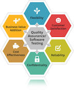

IT Mobile Application Developer
The IT-Mobile Applications Developer associate degree program meets the specific skills and knowledge requirements of technical and professional jobs within the information technology (IT) field.
Gain the entry-level skills for areas of the IT field that primarily utilize mainframe computers in conjunction with web and server applications.
Training blends general educational development with required IT technical skills for programmer/analysts in government, insurance, manufacturing, service, wholesale and retail sales, utilities, banking and accounting. Additional education and
job experience can lead to work in systems analysis.
IT Web Software Developer
The IT-Web Software Developer program at Madison College meets the specific skills and knowledge requirements of technical and professional jobs within the information technology field for an entry-level web
analyst/programmer.
This technology-based program is designed to meet
entry-level educational needs in most segments of the IT field, which utilizes a variety of computers. Training blends general educational development and required IT technical skills. Graduates are prepared
for entry-level web developer jobs in government, insurance, manufacturing, service, software development, wholesale and retail sales, utilities, banking and accounting.

IT Software Quality Specialist
The IT-Software Quality Specialist program will prepare you to verify and validate the quality of software and other operational platforms in an organization.
Students will gain an understanding of how quality relates to software development and the related costs and benefits of properly tested systems. In addition, students will understand the impact that quality assurance has on technology in
today’s world of accelerated change. Career opportunities for skilled quality specialists exist in all areas of the country and are in high demand.
This associate degree program meets the specific skill and knowledge requirements of Front End Developer positions. A front end web
developer is responsible for implementing visual elements and interactivity that users see in modern web applications.
Front end developers use HTML, CSS, and JavaScript, along with numerous JavaScript frameworks, to code interactive web applications.
Training blends general educational development with required IT technical skills for developers in government, insurance, manufacturing, service, wholesale and retail sales, utilities,
banking and accounting.
The Big Data certificate from Madison College is designed to prepare students with programming skills and general algebra knowledge to identify the correct toolset for data-related business problems and implement solutions under the guidance
of an analytics specialist.
The student will understand data cleansing (ETL), data lakes, data warehousing, cluster computing, streaming data (from IoT) and machine learning, including artificial intelligence. Students will learn the basics of the R and be proficient in
the Python programming language.
IT Java Professional Developer
The IT Java Professional Developer certificate from Madison College is designed to prepare information systems professionals to use the Java programming language for web development. Three classes teach students the necessary skills to be
successful in Java web development.

IT PHP Professional Web Developer
The PHP Professional Web Developer Certificate at Madison College is designed to prepare information systems professionals to use the PHP programming language for web development. Classes cover advanced web application features such as
shopping carts, content management systems using Drupal, web forums and connecting to web services. The certificate classes teach students the necessary skills to make them successful in PHP web development.